Homepage Visual Refresh V1
Native-style storyboard packet for SpeakLocal Vietnam. The recommendation is a Hybrid Utility Home: immediate phrases and Search first, image-led category/city discovery below, and returning-user shelves only after real local state exists.
Recommended direction: Direction 1 structure + Direction 2 image cards below essentials + Direction 3 modules only after saved, recent, or practice state exists.
Docs-only
Native comps
No Swift edits
No mascot-led Home
Recommendation
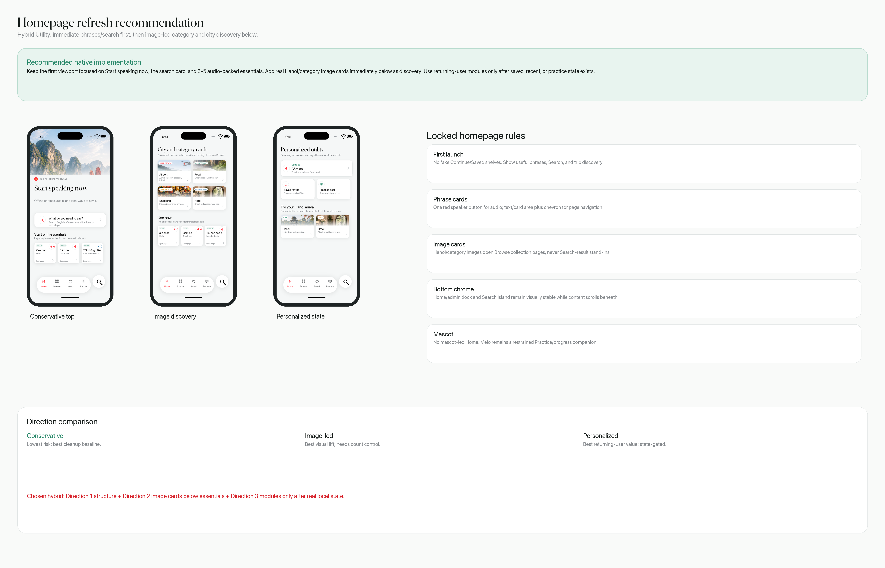
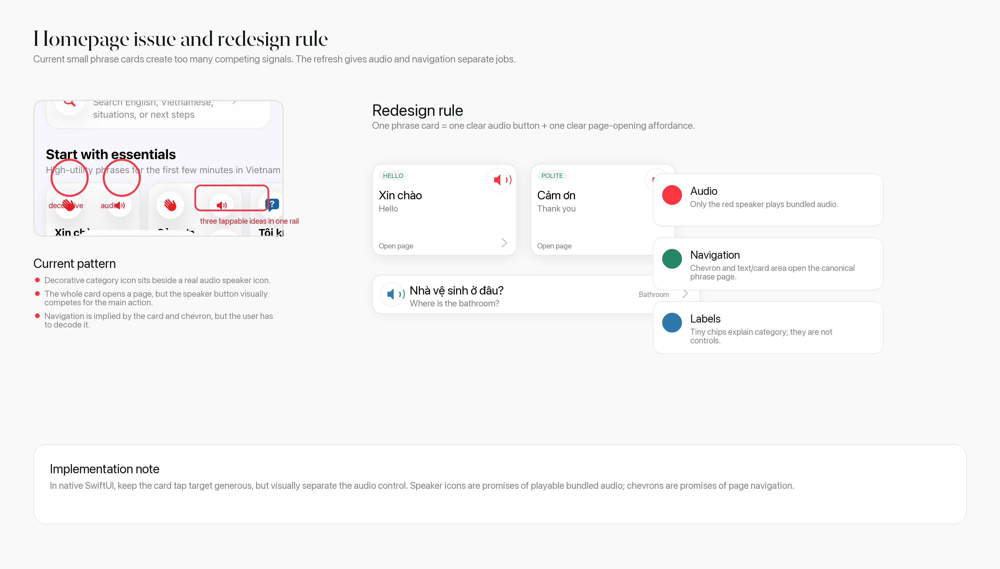
Three Directions
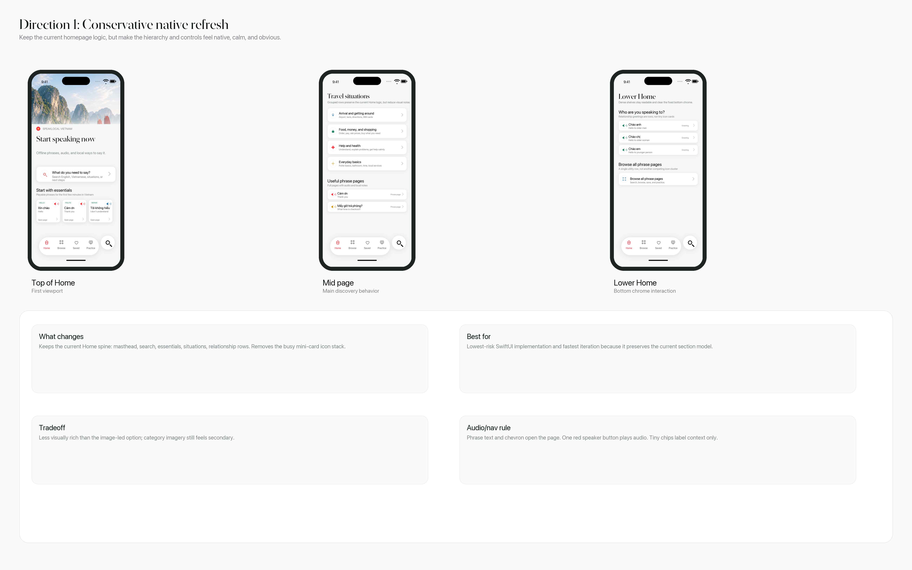
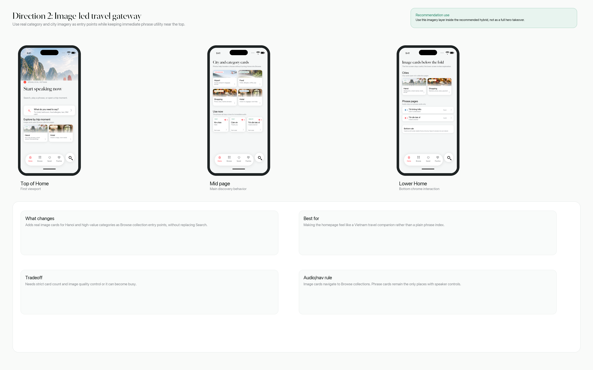
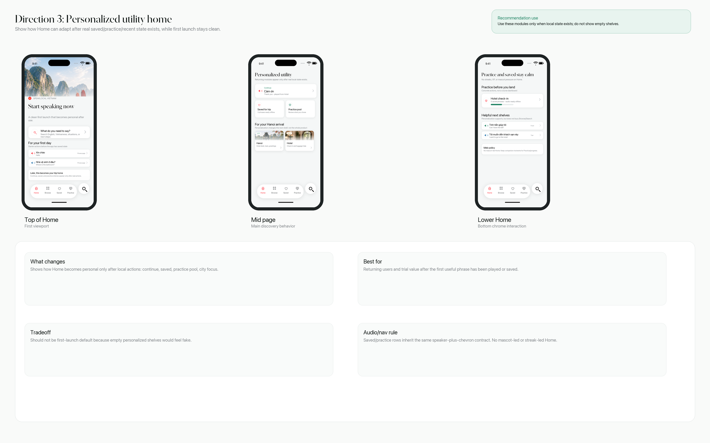
Full-Size Screen Comps
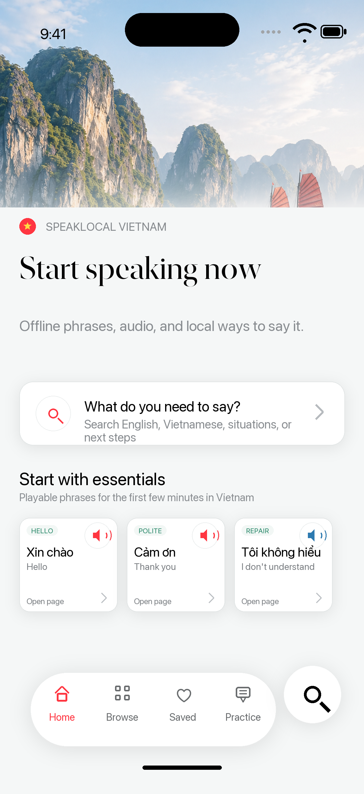
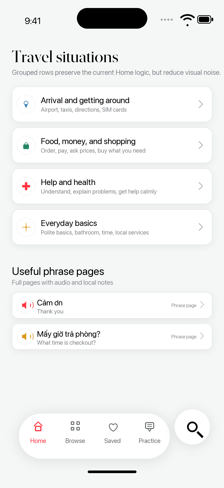
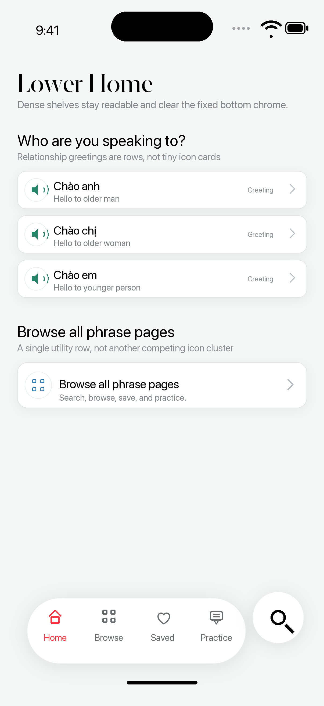
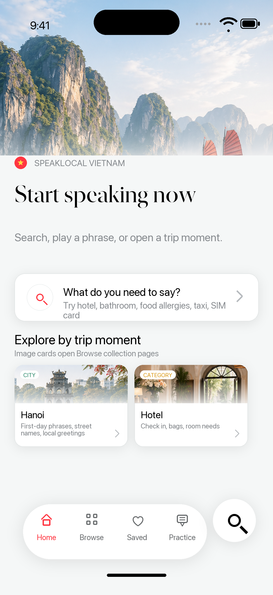
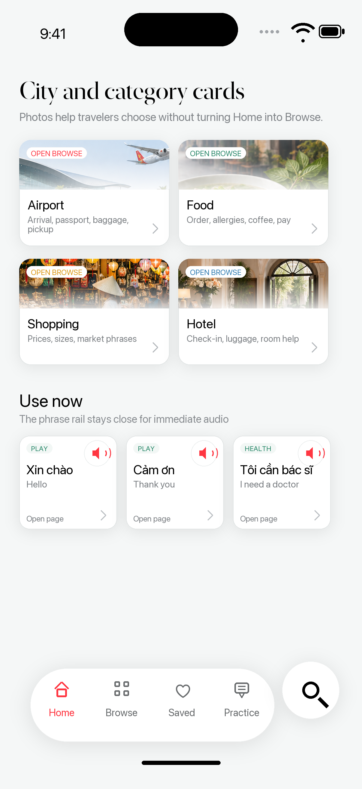
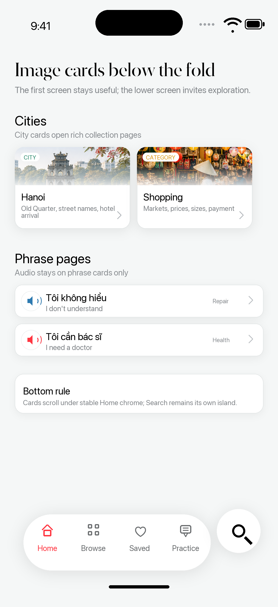
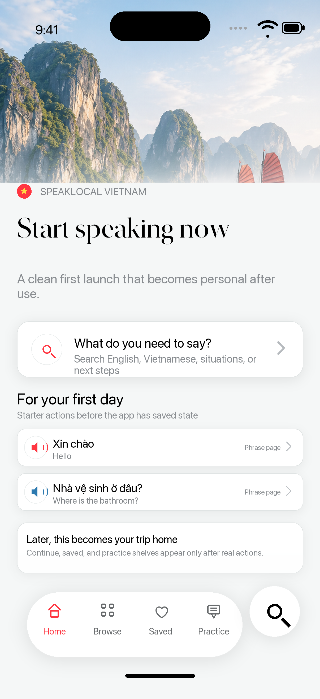
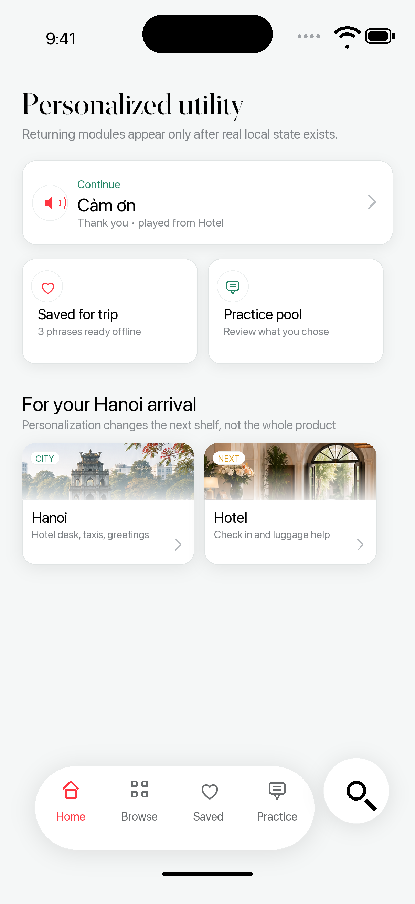
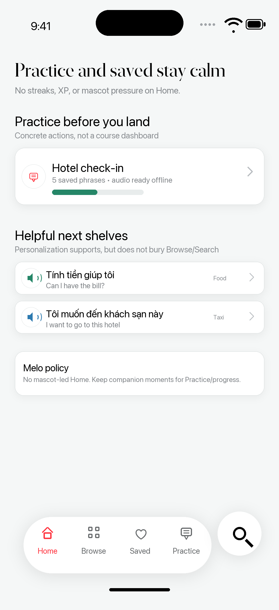
Implementation Notes
Phrase text and chevrons open canonical phrase pages. One red speaker button plays bundled audio. Image cards open Browse collection pages, not Search results. Keep the Home/admin dock and Search island stable while content scrolls underneath.
Supporting docs: README, prompt packet, and peer review.